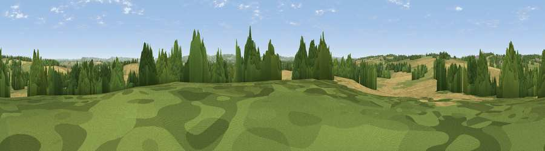

Viewpoint near Stourton Caundle
#43116 in England · top 95% of its area beats it · near Stourton Caundle · access?Where it is
The exact computed spot (ST 72625 15575). Click the marker for map links.
Public access: no public right of way or access land is recorded at this exact spot — it may be on private land. Computed from Natural England's CRoW access layer and OpenStreetMap rights of way — not the legal definitive map. Always verify locally.
The view, rendered

A 360° render of this exact spot computed from the terrain model, tree cover and land cover — summer colours, afternoon light, calibrated against photographs of famous viewpoints. Real trees, hedges and buildings will differ in detail.
The panorama
Grey silhouette: terrain skyline in each direction (720 bearings, Earth curvature and refraction included). Dashed green: skyline with trees (+15 m) and buildings (+8 m) as obstacles. Blue strip: how far the ground is visible on each bearing.
Where the view opens
Wedge length = distance to the farthest visible ground on that bearing (vegetation-aware). Rings at 10, 25 and 50 km.
What fills the view
46% grassland · 41% cropland · 12% woodland ·
Angular shares of the visible panorama (visual magnitude), not map area. Landscape diversity 0.45 (0–1 Shannon).
Key numbers
More beautiful places nearby
The staircase of upgrades: each row has a higher view potential than everything closer. Driving times are estimates from straight-line distance, calibrated against real road routing — check an actual route before setting out.
| Place | Direction | Drive | Score |
|---|---|---|---|
| Viewpoint near Lydlinch | E · 1 km | ~4 min | 51.2 |
| Holt Hill | WSW · 4 km | ~9 min | 56.7 |
| Viewpoint near Purse Caundle | NW · 5 km | ~10 min | 60.4 |
| Viewpoint near Lillington | W · 10 km | ~19 min | 68.7 |
| Viewpoint near Belchalwell | SE · 10 km | ~19 min | 70.8 |
| Bell Hill | SE · 10 km | ~20 min | 73.0 |
| Viewpoint near Woolland | SSE · 11 km | ~21 min | 74.5 |
| The Beacon | NW · 12 km | ~23 min | 75.8 |
50.93896, -2.39098 · source: screening · position refined by local search. Computed location — check access rights before visiting.